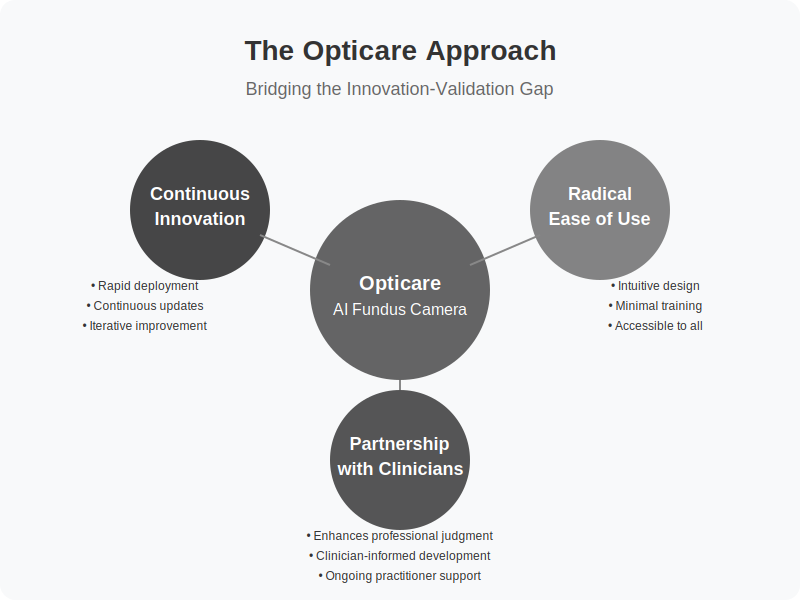

6 技术发展快于科学
技术创新与医疗保健的交叉点带来了前所未有的机遇和独特的挑战。本章探讨了技术快速进步，特别是在人工智能和影像分析等领域，如何常常超越传统科学验证过程。我们将通过视网膜成像技术的视角来审视这一动态，同时考虑其对健康从业者的影响。
6.1 传统科学模型
1747年夏天，在HMS Salisbury号上，詹姆斯·林德进行了许多人认为的医学史上第一次受控临床试验。他测试柑橘类水果作为坏血病治疗方法的系统性方法，为现代循证医学奠定了基础。近三个世纪后，这种对严格科学验证的承诺仍然是医学进步的支柱。然而，在当今快速发展的技术环境中，这一传统模型面临着前所未有的挑战。
在医疗保健中，从创新到实施的常规路径遵循一个精心规定的旅程。它始于基础研究和开发，在此阶段形成假设并开发初步原型。这之后是初步测试，通常在实验室环境中进行，随后是逐步从动物研究到人类参与者的严格控制试验。产生的数据随后经历密集的同行评审、监管审查，最后是临床实施。这一过程通常跨越5-10年——往往更长。
这种系统性方法为医学服务良好。它给我们带来了抗生素、疫苗和无数其他改变人类健康的创新。严格的验证过程有助于确保安全性、有效性和可重复性。它保护患者免受有害或无效治疗的影响，并建立医疗实践所需的信任。
然而，我们现在发现自己处于一个技术步伐显著超过传统验证方法的时代。以医学影像中的人工智能领域为例。在设计、实施和发布单一随机对照试验结果所需的时间内，底层人工智能技术可能已经经历了多代改进。正在验证的算法在研究结束前可能已经过时。
这种不匹配在医疗创新中造成了日益增长的紧张局势。一方面，我们有科学严谨性和患者安全的根本需求；另一方面，我们拥有前所未有的技术能力，如果能找到适当的验证和实施方法，可能会改变患者护理。
这一挑战在视网膜成像等领域尤为突出，那里的硬件和软件进步正在革命化我们检测和监测健康状况的能力。传统验证方法会让我们等待多年才能实施今天就能帮助患者的技术。然而，没有适当验证就过快行动可能会危害患者安全和医疗伦理。
这不仅仅是理论上的担忧。以IBM的Watson Health为例，它承诺通过人工智能分析革新癌症治疗。传统科学界对此的怀疑被证明是有道理的，因为该系统在临床环境中的推荐有时被证明不可靠。然而，同一时期，其他人工智能系统在更专注的应用和适当验证策略下发展，成功地增强了从放射学到病理学的医疗决策。
关键问题变为：我们如何在保持科学严谨性的同时跟上技术创新的步伐？答案可能在于开发新的验证范式，这些范式保留科学方法的基本要素，同时适应快速技术进步的现实。
已经出现了一些有前景的方法。现实世界证据研究分析实际临床使用的数据，而不是控制试验，可以比传统研究更快地提供有价值的见解。自适应试验设计允许对新兴技术进行更灵活的评估。上市后监控系统帮助在实施后监测安全性和有效性。这些方法不是取代传统验证，而是对其进行补充，为评估新技术提供了额外的途径。
医学界也开始认识到，不同类型的创新可能需要不同的验证方法。新的外科技术可能合理地需要多年的仔细研究才能被广泛采用。但非侵入性成像技术，如果风险极小，可能通过针对特定应用的短期研究就能适当评估。
这种不断演变的视角对于像眼底摄影这样的技术尤其相关，它提供了一个非侵入性的人体健康窗口。视网膜成像的基本安全性通过数十年的临床使用已经确立。创新在于新的图像捕获和分析方式。在这里，传统验证模型可能较少关注基本安全性，而更多关注新分析方法的可靠性和临床实用性。
这种思维转变并不意味着放弃科学原则。相反，它意味着调整它们以适应现代创新的性质。我们仍然需要证据。我们仍然需要验证。但我们需要能够跟上技术进步的框架，同时保持适当的科学严谨性标准。
对于医疗创新者来说，挑战在于负责任地导航这一变化的景观。这需要理解传统科学模型的重要性及其在当今快速技术环境中的局限性。这意味着要对我们知道的和仍在学习的内容保持透明。这还意味着愿意探索新的验证范式，同时保持对患者安全和科学诚信的承诺。
随着我们前进，目标不是在科学严谨性和技术创新之间做出选择，而是找到拥抱两者兼顾的方法。传统科学模型为医学服务良好，但像所有工具一样，它必须进化以应对当前的挑战。在接下来的部分中，我们将探讨像Opticare这样的公司如何努力弥合这一差距，开发既保持科学完整性又允许及时实施有前景的新技术的方法。
6.2 技术加速曲线
1965年，戈登·摩尔提出了一个后来被证明具有预言性的观察：微芯片上的晶体管数量大约每两年翻倍，而成本减半。这一预测，现在被称为摩尔定律，在超过半个世纪的时间里惊人地保持正确。但摩尔定律只讲述了故事的一部分。在人工智能和医学影像领域，我们见证的加速甚至超过了这些雄心勃勃的预测。
考虑一个用于视网膜分析的现代人工智能成像系统。与传统医疗设备在部署后保持静态不同，这些系统是动态的学习实体。它们不仅随着每次软件更新而改进，而且随着处理每张图像而改进。这种持续的精炼创造了我们所称的“创新-验证差距”——技术能力与通过传统科学过程正式验证的内容之间日益扩大的距离。
这种加速的步伐令人震惊。在机器学习领域，突破性算法往往每周而非每年出现。一月份代表最先进性能的模型到三月份可能已经过时。这种快速进展源于几个汇聚的因素，创造了一个技术进步的强大反馈循环。
首先，有驱动这些系统的原始计算能力。遵循摩尔定律，这大约每两年翻倍。但真正的加速来自我们如何使用这种能力。现代人工智能架构可以跨数千个处理器并行操作，将曾经是顺序的改进转变为同时的进步。云计算平台使这种巨大的计算能力对全球研究人员和开发者可访问，进一步加速了创新的步伐。
然后是数据。现代医学成像系统不仅仅捕捉图像；它们创建了推动自身改进的庞大数据集。每张新图像、每次临床相关性、每次结果测量都成为学习语料库的一部分。这创造了一个良性循环：更好的算法导致更好的图像分析，从而导致更好的数据收集，反过来又使更优的算法成为可能。
开发周期本身也发生了转变。传统医疗设备开发遵循线性路径：设计、构建、测试、部署。现代人工智能系统采用持续集成和部署管道，改进可以实时推送到生产系统中。这意味着，当传统临床试验可能在评估系统1.0版时，2.0版、3.0版甚至4.0版可能已经存在。
用户反馈，曾经通过正式研究和调查收集，现在立即返回给开发者。当临床医生使用人工智能成像系统时，他们的互动、更正和注释可以立即通知系统改进。这创造了另一个加速循环：更快的反馈使更快的改进成为可能，反过来又使更有用的反馈成为可能。
这种加速的影响在医学影像分析中尤为明显。传统图像解释依赖于固定标准和人类多年训练发展出的模式识别。现代人工智能系统可以在人类专家检查少数图像的时间内分析数百万张图像。更重要的是，它们可以检测人类观察者可能看不到的模式和相关性。
这导致了我们可能称之为“能力悖论”的情况。到我们彻底验证人工智能系统检测特定模式或条件的能力时，该系统可能已经发展出检测更多模式的能力。验证过程虽然必不可少，但总是落后于技术的实际能力。
考虑视网膜成像的具体案例。传统分析关注与特定条件相关的一组相对较小的已知模式。现代人工智能系统可以同时分析数百个特征，识别视网膜特征与系统性健康状况之间的微妙相关性。到我们通过传统临床试验验证一个这样的相关性时，系统可能已经识别出数十个潜在的生物标记。
这种加速为医疗提供者创造了机会和挑战。机会在于获得持续改进的日益强大的诊断工具。挑战在于知道如何在保持临床标准和患者信任的同时适当地实施这些快速发展的技术。
创新-验证差距不仅影响技术；它影响整个医疗生态系统。临床医生必须决定是等待每种新能力的完全验证，还是在技术仍在发展时小心纳入有前景的技术。监管机构必须平衡确保安全的职责与它们评估的技术是移动目标的现实。医疗机构必须开发框架，以实施明天可能比今天更强大的系统。
这个差距还提出了关于我们如何测量和验证技术能力的重要问题。传统验证方法假设目标是静态的——药物或设备在整个验证过程中保持不变。但我们如何验证一个可能每周甚至每天自我改进的系统？我们如何确保安全性和有效性，同时允许持续改进？
答案可能在于开发新的验证范式，这些范式承认并考虑技术加速。这些可能包括：
- 滚动验证协议，持续评估系统性能
- 实时监控系统，跟踪准确性和结果
- 自适应审批流程，允许能力受控进化
- 分级实施策略，匹配验证要求与风险水平
- 与技术共同进化的持续质量保证框架
技术加速曲线还为技术开发者创造了新的责任。虽然快速改进系统的能力存在，但开发者必须确保这些改进不会超过他们确保安全和可靠性的能力。这需要强大的测试框架、仔细监控系统性能，以及关于能力和局限性的透明沟通。
理解这种加速曲线对于考虑采用人工智能成像系统的医疗提供者至关重要。这意味着认识到他们今天实施的系统明天、下一个月和明年可能会更强大。这意味着开发可以与技术一起进化的协议。这还意味着在拥抱创新和确保患者安全之间保持平衡。
随着我们前进，技术能力与正式验证之间的差距可能会继续扩大。医疗提供者的挑战不是关闭这个差距——鉴于当前的创新步伐，这可能是不可能的——而是学会在其中有效地工作。这需要新的验证方法、新的实施框架和新的医疗技术思维方式。
6.3 Opticare方法
当Opticare的创始人首次设想将先进的人工智能视网膜成像带给健康从业者时，他们面临一个基本问题：他们如何能在保持最高临床护理标准的同时负责任地部署尖端技术？他们的答案演变成了我们现在所称的Opticare方法——一个由三个核心原则指导的全面框架，解决了在医疗技术前沿操作的独特挑战。

持续创新
Opticare哲学的核心是对持续创新的承诺。公司坚信，突破性技术应在能够负责任地部署时尽快到达从业者和他们的客户手中，而不是在多年的传统验证周期之后。这一原则认识到，在实施可能有益的技术之前等待完全的科学共识可能会延迟宝贵的护理机会。
这种方法并不意味着将未经证明的技术匆忙推向市场。相反，它涉及对风险-收益概况的仔细评估，特别关注视网膜成像的非侵入性性质。与介入治疗或药物不同，眼底摄影对患者几乎没有直接风险，同时通过早期检测健康模式提供了显著的潜在益处。
Opticare的开发周期强调基于现实世界反馈的快速迭代。新功能不断开发，内部测试，与现有数据集验证，然后小心引入从业者。这种渐进式部署策略允许在保持系统可靠性的同时控制新功能的引入。
持续创新原则延伸到软件更新的管理方式。与可能扰乱既定工作流程的不频繁重大发布不同，Opticare采用滚动更新方法。改进逐步部署，允许从业者逐渐适应，同时在增强功能可用时立即受益。
极致易用性
Opticare方法的第二个核心原则集中于通过极致易用性使先进技术对尽可能广泛的从业者可访问。公司认识到，如果技术过于复杂或在日常实践中使用不便，即使是尖端技术也几乎没有益处。
这一原则体现在优先考虑简单性和可靠性的硬件设计上，而不是技术复杂性。相机的物理界面直观，操作所需的最小培训。自动功能如自我定位和自动对焦调整消除了许多传统上将视网膜成像限制在专业环境中的技术障碍。
软件界面也同样注重易用性设计。报告系统以清晰、可操作的格式呈现复杂信息，支持临床决策而无需广泛的技术知识。与来自不同背景的从业者进行用户体验测试有助于确保系统无论技术专长如何都保持可访问性。
对易用性的承诺不仅限于技术本身，还包括整个实施过程。简化的设置程序、全面但简洁的培训材料和响应迅速的支持系统帮助实践以最小的干扰整合技术。这种方法使先进成像能力民主化，使那些通常缺乏此类技术所需专门资源的实践也能使用。
与临床医生的合作
第三个基本原则认识到，无论技术多么先进，当由知识渊博的医疗专业人员部署时，它才能发挥最高目的。尽管专注于自动化和易用性，Opticare坚持认为临床专长对于适当技术利用仍然至关重要。
这种合作方法意味着开发增强而不是试图取代专业判断的技术。系统提供复杂的分析并识别模式，但从业者根据他们更广泛的临床理解和对个别客户的了解来解释这些发现。
Opticare在整个开发过程中积极寻求执业临床医生的意见。从最初的概念到部署和持续改进，医疗专业人员提供了塑造技术能力和实际实施的关键见解。这种协作方法有助于确保技术解决真实的临床需求，而不是为了技术能力本身而追求。
合作原则还指导Opticare如何处理客户关系。公司不仅仅是提供设备，而是与从业者建立持续的关系，提供继续教育、实施支持和参与未来发展的机会。这种参与帮助实践最大化技术的好处，同时为公司提供持续改进的宝贵反馈。
通过专注于这三个核心原则——持续创新、极致易用性和与临床医生的合作——Opticare方法为在医疗环境中负责任地部署先进技术创造了一个框架。这种平衡的方法允许从业者访问尖端功能，同时保持专业标准和优先考虑客户护理。
随着我们前进，这种方法将继续与技术本身一起进化。新功能将出现，易用性将进一步提高，临床合作将加深。在这一演变过程中，核心原则将保持不变，为视网膜成像技术及其在健康护理中的应用的持续进步提供稳定基础。
现实世界证据的作用
医学界对证据的方法历来由一个熟悉的金字塔表示。其顶端是系统评价和元分析，其次是随机对照试验（RCT）、队列研究、病例对照研究，最后是基层的专家意见。这一层次结构几十年来为医学服务良好，为评估新治疗和干预措施提供了清晰的框架。然而，像先进视网膜成像系统这样的人工智能医疗设备的出现，要求我们重新想象这一传统结构。
考虑一台配备人工智能分析能力的现代眼底相机。它可能在一天内处理数百张图像，每张图像生成关于图像质量、检测准确性和临床相关性的数据。在一个月内，它可能积累的单个数据点比典型的RCT还多。在一年内，跨多个设备和实践，它可能分析的案例比所有关于传统眼底摄影的已发表研究加起来还要多。这种现实世界证据的量无法整齐地适应传统证据金字塔，但它提供了补充常规研究方法的关键见解。
现实世界证据为技术评估带来了独特的优势。与通常涉及精心挑选的患者群体和标准化条件的控制试验不同，现实世界数据捕捉了临床实践的复杂现实。它展示了技术如何在不同人群、不同临床环境和不同实施方法下的表现。这种经验的广度常常揭示控制研究可能错过的见解。
例如，考虑照明条件对图像质量的影响。控制试验可能标准化照明以确保一致的结果。但现实世界实施数据可能显示，某些照明配置虽然从技术角度看并非最佳，但在繁忙的临床环境中实际上效果更好，因为它们对工作人员来说更实用。这种实用见解只有通过大规模的现实世界使用才能显现。
现实世界证据促成的快速反馈循环也在技术开发中发挥了关键作用。当数百个地点的从业者每天使用系统时，模式很快就会显现。一个使老年患者图像捕获更困难的微妙用户界面问题可能在几周内而不是几个月或几年内在控制研究中显现。这些快速见解使快速迭代和改进成为可能，显著影响临床实用性。
然而，这并不意味着我们应该放弃传统证据层次。相反，我们需要扩展我们对评估现代医疗技术时什么是有效证据的理解。这一扩展框架必须同时容纳传统临床验证和新的技术和实用验证形式。
例如，算法性能指标代表了一个不完全适应传统层次的新证据类别。这些指标可能包括敏感性和特异性测量，但也包括技术参数，如处理速度、各种条件下的错误率和算法随时间稳定性。理解这些指标对于评估人工智能医疗设备至关重要，但它们需要与传统临床措施不同的专长和验证方法。
技术验证研究提供了另一种必不可少的证据形式。这些研究检查算法可重复性、硬件可靠性以及系统在各种操作条件下的稳健性等问题。虽然它们可能不直接测量临床结果，但它们提供了关于系统基本可靠性和可信度的关键信息。
用户体验反馈，在传统证据层次中常被忽视，对于人工智能医疗设备尤为重要。这些系统的有效性不仅取决于其技术能力，还取决于从业者将其成功整合到临床工作流程中的能力。系统收集和分析用户反馈提供了关于现实世界实用性和实际实施挑战的基本证据。
安全监控数据代表了另一个关键的证据类别。现代医疗设备可以包括持续跟踪性能指标、错误率和潜在安全问题的自动监控系统。这种持续监控提供了超越传统临床试验所能提供的安全保证水平，使潜在问题的快速检测和响应成为可能。
挑战在于将这些不同的证据形式整合成一个连贯的技术评估框架。我们需要能够将传统临床证据与技术验证数据、现实世界性能指标和实用实施见解一起权衡的方法。这种综合评估必须考虑的不仅是技术在理想条件下的工作情况，还有它在现实世界临床环境中的表现以及它如何影响整体患者护理。
一种有前景的方法涉及并行证据流。通过控制试验的传统临床验证继续进行，为特定临床应用提供强有力的证据。同时，现实世界证据通过日常使用积累，技术验证确认可靠性和性能，用户反馈通知实用实施。这些流不是竞争，而是互补，每一个都提供了独特的见解，有助于我们理解技术的价值和适当使用。
这种扩展的证据框架特别适合像人工智能视网膜成像这样的技术。视网膜摄影的基本安全性通过数十年的临床使用已经确立。创新在于新的图像捕获和分析方法。对于这些方面，技术验证和现实世界性能数据实际上可能比传统临床试验提供更相关的证据。
随着我们前进，关键在于在承认新证据形式有效性的同时保持科学严谨性。我们必须开发系统的方法来收集和分析现实世界数据，建立技术验证标准，并创建将各种类型证据整合到全面技术评估中的框架。只有通过拥抱这种更广泛的证据观点，我们才能有效地评估和实施迅速发展的医疗技术，这些技术有望改变患者护理。
6.4 人工智能的优势
2012年春天，一个深度学习系统因教会自己识别YouTube视频中的猫而登上头条。当时看似琐碎的成就标志着我们处理模式识别方式的根本转变。同样的基础能力——从海量数据中学习复杂模式的能力——现在驱动着包括视网膜检查在内的先进医学影像分析。但其影响远不止简单的模式匹配。
人工智能在医学影像中的核心优势不仅在于其分析图像的能力，还在于它通过规模学习和改进的方式。传统医学图像分析依赖于人类专家应用标准化标准。虽然这种方法非常有效，但它有固有的局限性——人类专家只能检查有限数量的图像，只能记住有限数量的模式，并且只能在有限的时间内保持一致的性能。人工智能系统以超越这些限制的方式创造了它们自己的验证形式。
考虑人工智能系统分析视网膜图像时会发生什么。每处理一张图像都添加到系统的经验数据库中。随着现代眼底相机每天在多个地点捕获数千张图像，人工智能的“经验”以人类专家无法匹敌的速度增长。这种规模创造了传统医疗实践中不存在的学习和验证机会。
现代人工智能系统的持续学习能力代表了与传统医疗设备的根本背离。常规诊断工具一旦校准和部署就保持静态。其性能可能随时间下降，但不会提高。相比之下，人工智能系统可以随着处理的每张新图像、识别的每个新模式和发现的每个新相关性而改进其能力。
这种学习不仅限于简单的模式识别。现代人工智能系统可以识别人类观察者可能看不到的庞大数据集中的微妙关系。它们可以将视网膜结构的细微变化与系统性健康状况相关联，以完美的一致性跟踪随时间的变化，并在不同患者群体中识别新兴模式。这种分析的规模通过纯粹的统计力量提供了一种验证形式。
人工智能分析的一致性提供了另一个关键优势。无论训练多么良好的专家，他们的评估都会显示自然变化。疲劳、分心或简单的人类不一致性都可能影响他们的判断。人工智能系统无论工作量或一天中的时间如何都能保持一致的性能。当追踪随时间变化的微妙变化或比较不同实践的结果时，这种一致性变得尤为有价值。
人工智能分析的可扩展性创造了通过人类审查者难以实现的质量控制机会。每张图像都可以自动检查质量指标，如对焦、照明和定位。异常结果可以标记以供审查。可以通过数千张图像跟踪性能指标，以识别准确性或一致性中的任何漂移。这种自动质量控制提供了通过人类审查实现将成本高昂的验证水平。
也许最重要的是，人工智能系统可以迅速识别不同人群中的模式。传统临床研究常常因地理和物流限制而难以代表人口统计学特征。从多个地点分析图像的人工智能系统可以快速积累不同种族群体、年龄范围和健康状况的数据。这种暴露的多样性有助于验证系统在比典型临床试验所能达到的更广泛人群中的性能。
人工智能分析的规模还使得快速识别罕见病症或异常模式成为可能。虽然人类从业者在其职业生涯中可能只遇到几次罕见的视网膜病症，但每天处理数千张图像的人工智能系统可能在几周内识别出多个例子。这种对罕见病例的加速暴露有助于验证系统识别不寻常表现的能力，同时为未来参考构建有价值的数据库。
然而，规模和人工智能能力的优势必须与仔细验证底层算法的需求相平衡。处理数百万张图像的能力并不自动保证准确分析。关键在于将人工智能的可扩展能力与确保可靠性和临床相关性的严格验证协议相结合。
这种验证采取多种形式。技术验证通过使用已知结果的控制测试确认人工智能的基本模式识别能力。临床验证验证这些能力转化为有意义的诊断见解。现实世界验证确保系统在不同实践环境和患者群体中一致表现。
人工智能系统的快速适应能力为验证创造了机会和挑战。虽然系统可以快速纳入新信息并提高其性能，但这种适应性需要仔细监控，以确保变化增强而不是降低临床实用性。这导致了专为适应性人工智能系统设计的新验证协议的开发。
自动监控系统在持续验证中发挥了关键作用。这些系统跨数百万次分析跟踪性能指标，识别任何偏离预期模式的偏差。它们可以检测系统性能的微妙变化，这可能表明需要调整或揭示值得调查的新模式。这种持续监控提供了与人工智能系统适应性相匹配的动态验证形式。
展望未来，人工智能在医学影像中的优势可能会变得更加显著。计算机视觉、机器学习和数据分析的进步继续增强这些系统能够识别和理解的内容。挑战不在于开发这些能力，而在于负责任地验证它们并在临床实践中有效实施。
人工智能分析的规模并没有取代传统验证方法，而是提供了帮助弥合创新-验证差距的补充证据。通过将人工智能的可扩展能力与严格的验证协议相结合，我们可以利用机器学习的力量，同时保持最高标准的临床护理。这种平衡的方法使我们能够推进医学影像技术，同时确保它服务于其最终目的——改善患者护理和结果。
6.5 结论
技术进步的快速步伐为健康从业者带来了机遇和挑战。虽然传统科学验证仍然重要，但理解和适当地实施新技术需要一种平衡的方法，考虑经典证据和现代验证方法。
成功在于在拥抱创新增强客户护理潜力的同时保持专业标准。这需要持续教育、谨慎实施和对道德实践的承诺。
未来健康护理将越来越多地涉及像Opticare人工智能相机这样的技术增强工具。理解这些工具的能力和局限性，同时保持适当专业边界的从业者，将最有能力为客户提供最佳护理。
关键要点：
- 技术往往比传统验证发展更快
- 多种形式的证据支持技术创新
- 专业责任需要平衡实施
- 持续教育和适应至关重要
- 清晰的沟通和记录仍然至关重要
- 道德实践指导技术采用
通过理解这些原则并深思熟虑地实施它们，从业者可以成功导航技术增强健康护理的不断发展的景观。